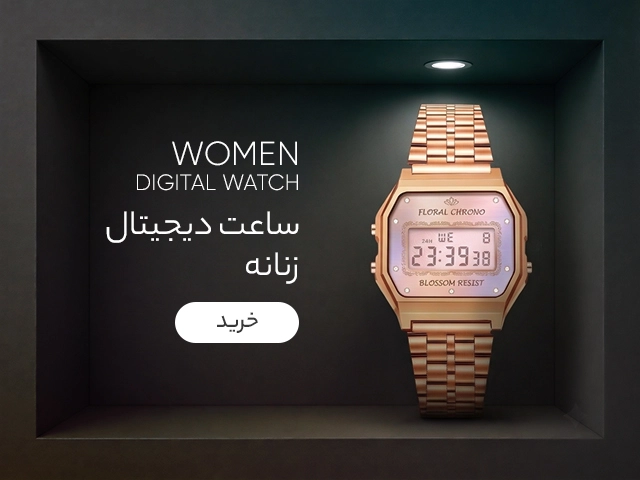
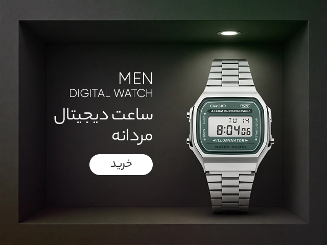

نقش ساعت مچی زنانه در استایل
ساعت مچی زنانه، نقش بسیار مهمی در استایل و لباسهای زنانه دارد. علاوه بر نمایش زمان، ساعت مچی میتواند به عنوان یک جزء تزئینی و اضافه کنندهای در ظاهر و استایل شما عمل کند. اینکه چگونه یک ساعت مچی زنانه را انتخاب کنید و به چه صورت در استایل خود به خوبی استفاده کنید، میتواند شخصیت و سلیقه شما را منعکس کند.
من اقدام به ارائه چند نکته زیر میکنم که در انتخاب و استفاده از ساعت مچی زنانه برای استایل شما مفید خواهد بود:
1. طرح و ظاهر: با توجه به سلیقه شما، میتوانید از ساعتهای زنانه با طرحهای مختلف استفاده کنید. از ظاهر کلاسیک و ساده تا طرحهای مدرن و غیرمعمول، با توجه به سبک و شخصیت خود، ساعت مچی را انتخاب کنید. همچنین در نظر داشته باشید که ساعت مچی باید با سایر جزئیات از جمله رنگ لباسها، جواهرات و دیگر اکسسوریها هماهنگ باشد.
2. جنس و رنگ بند: موادی مانند فلز، چرم، نایلون و حتی حصیر برای بندهای ساعت مشترک استفاده میشوند. با توجه به سبک و مکانیزم ساعت، باید بندی را انتخاب کنید که با آن همخوانی داشته باشد. رنگ بند همچنین میتواند تنوع و جذابیت بیشتری به استایل شما ببخشد. بهتر است با انتخاب رنگ بند، با سایر اجزای لباس و اکسسوریها هماهنگی داشته باشید.
3. اندازه صفحه: انتخاب صفحه مناسب برای ساعت مچی زنانه نیز بسیار مهم است. صفحههای بزرگتر و دلخواه ترند جدیدی در دنیای مد هستند، در حالی که صفحههای کوچکتر و کلاسیک بیشتر به ساعتهایی مناسب برای موقعیتهای رسمی استفاده میشوند. ازین جهت، ساعت مچی زنانه صحبتهایی را دربارهٔ شخصیت و سلیقه شما میکند.
4. فعالیتهای روزمره و ورزشی: در صورتی که به طور روزانه ورزش میکنید یا برای کارهای خاصی نیازمندید، ممکن است نیازمند ساعت مچی مناسب و ورزشی باشید. اینگونه ساعتها معمولاً دارای ویژگیهایی مانند مقاومت در برابر آب، تحمل فشار و ضربه و قابلیتهای متنوعی برای ردیابی وضعیت فعالیتهای ورزشی شما هستند.
ساعت مچی زنانه، نقش بسیار مهمی در استایل و لباسهای زنانه دارد. علاوه بر نمایش زمان، ساعت مچی میتواند به عنوان یک جزء تزئینی و اضافه کنندهای در ظاهر و استایل شما عمل کند. اینکه چگونه یک ساعت مچی زنانه را انتخاب کنید و به چه صورت در استایل خود به خوبی استفاده کنید، میتواند شخصیت و سلیقه شما را منعکس کند.

عوامل تاثیر گذار در خرید ساعت مچی مردانه:
جنس صفحه ساعت
جنس صفحه ساعتها نقش مهمی در دوام، ظاهر و عملکرد آنها دارد. یکی از مواد رایج، شیشه معدنی است که به دلیل مقاومت بالا در برابر خراش و ضربه، در بسیاری از ساعتهای مقرونبهصرفه استفاده میشود.
کریستال یاقوت کبود، مادهای بسیار مقاوم به خراش است که در ساعت های لوکس و باکیفیت به کار میرود و ظاهری شفاف و براق دارد. پلاستیک یا اکریلیک نیز گزینه ای سبک و ارزان تر است، اما به راحتی خراشیده می شود و در ساعت های ورزشی یا کودکان کاربرد دارد.
علاوه بر این، برخی ساعت ها از شیشه ضدخش بهره میبرند که ترکیبی از مواد مختلف بوده و به مقاومت در برابر خراش و ضربه کمک میکند. انتخاب جنس صفحه ساعت به نیازها و ترجیحات فردی بستگی دارد؛ برای مثال، اگر به دنبال ساعتی با دوام و لوکس هستید، کریستال یاقوت کبود انتخابی مناسب خواهد بود، در حالی که برای مصارف روزمره و اقتصادی، شیشه معدنی یا پلاستیک ممکن است مناسب تر باشد.
بند ساعت
بند ساعت یکی از عناصر کلیدی است که نه تنها بر راحتی بلکه بر ظاهر و استایل کلی ساعت تأثیر میگذارد. بندها در انواع مختلفی مانند فلزی، چرمی، سیلیکونی، پارچهای و ناتو تولید میشوند که هر کدام ویژگیها و مزایای خاص خود را دارند. در هنگام خرید ساعت مچی مردانه انواع مختلفی از بند ها را می توان یافت.
بند های فلزی
اغلب از استیل ضد زنگ، تیتانیوم یا طلا ساخته میشوند. این بند ها به ساعت ها ظاهری رسمی و لوکس میبخشند و به دلیل دوام و مقاومت بالا در برابر خط و خش، گزینه ای عالی برای استفاده طولانی مدت هستند. علاوه بر این، بند های فلزی قابلیت تنظیم اندازه دارند که باعث راحتی بیشتر در استفاده میشود.
بند های چرمی
از چرم طبیعی یا مصنوعی تهیه میشوند و ظاهری کلاسیک و شیک به ساعت میدهند. این بند ها معمولاً برای استفاده در موقعیت های رسمی مناسب هستند و به مرور زمان نرم تر و راحت تر میشوند. با این حال، نیاز به مراقبت دارند تا دوام و زیبایی خود را حفظ کنند. معمولا در هنگام خرید ساعت مچی مردانه می توانید شاهد انواع مختلفی از بند های چرمی و پلاستیکی باشید.
بند های سیلیکونی
سبک، مقاوم در برابر آب و تعریق هستند و به همین دلیل در ساعت های ورزشی و هوشمند بسیار محبوب اند. این بند ها راحتی بالایی را در فعالیت های روزمره و ورزشی فراهم میکنند.
بند های پارچه ای
گزینههای متنوع و رنگارنگی هستند که برای سبک های غیررسمی و روزمره کاربرد دارند. این بند ها سبک و قابل شستشو بوده و در طرح ها و رنگ های مختلفی موجودند که به ساعت ها ظاهری جوان پسند و پویا میبخشند.
انتخاب بند ساعت به سلیقه شخصی، سبک زندگی و نوع فعالیتهای روزانه بستگی دارد، زیرا هر نوع بند ویژگیها و مزایای خاص خود را دارد که بر راحتی و دوام ساعت تأثیر میگذارد.